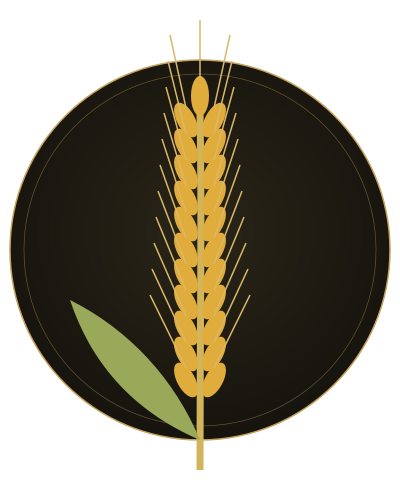
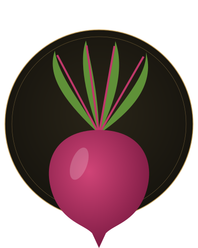
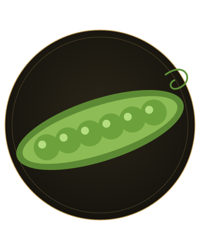

Le blé tendre
Il tient le rôle du riz. Précuit, il garde une mâche franche tout en libérant son amidon dans le bouillon pour rendre le plat onctueux.
Quatre ingrédients de plaine réunis pour imaginer une assiette végétale, entre texture crémeuse, fraîcheur et éclat de couleur.



Il tient le rôle du riz. Précuit, il garde une mâche franche tout en libérant son amidon dans le bouillon pour rendre le plat onctueux.
Elle sert à faire suer l’oignon puis à finir le plat. Sa note légèrement noisettée remplace le beurre du risotto classique.
Cuite et coupée en petits dés, elle apporte une couleur magenta franche et une touche sucrée qui équilibre le végétal.
Ajoutés en fin de cuisson, ils offrent le croquant et la fraîcheur qui manquent à une texture crémeuse.
Illustrations générées par une IA.
Crémeuse autour d’un grain qui reste ferme sous la dent.
Végétal et légèrement noisetté grâce à l’huile de colza.
Chaud, en plat principal végétarien.
colza + risotto = colzotto
« Colzotto » est un mot-valise. « Des champs » rappelle que tous les ingrédients poussent en plaine. Ce nom est une invention de l’auteur du site, sans aucune origine historique.
Aucun restaurant, producteur ou label réel n’est associé au colzotto. Pour le préparer vous-même, consultez la recette imaginée du colzotto ou le menu de saison.
Maison Sillon est un restaurant imaginaire. Aucune table ne peut être réservée et aucune donnée n’est collectée sur ce site.
Ce bouton illustre seulement la mise en page d’un site de restaurant.
Fermer